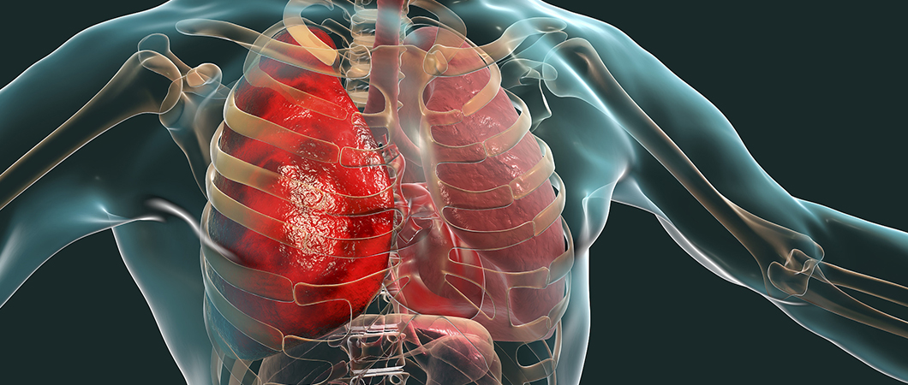
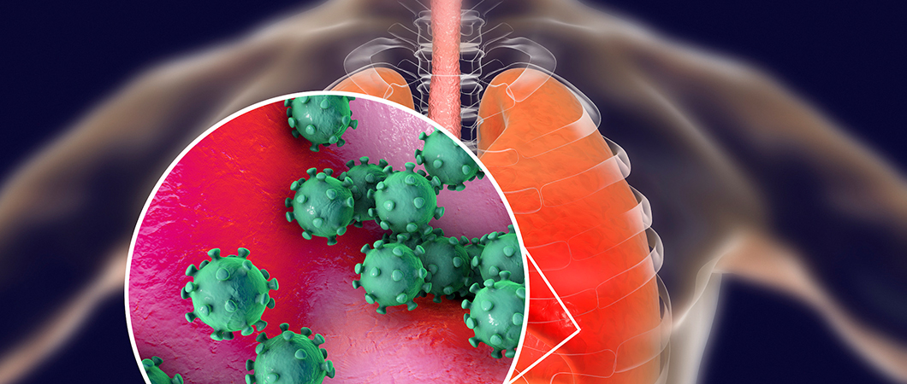
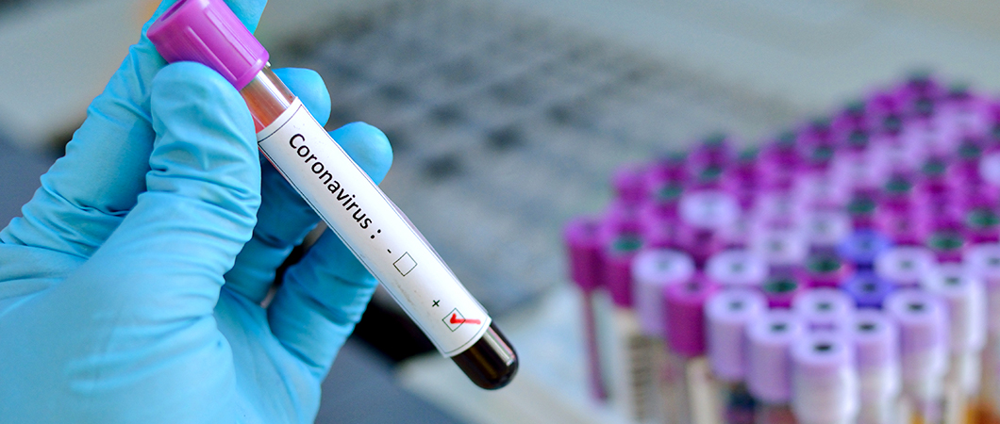

فيروس كورونا
بدأ فيروس كورونا بالإنتشار مع نهاية عام 2019 يعتبر فيروس كورونا سريع الإنتشار وينتقل عبر التلامس او الرذاذ الناتج عن السعال

تقرير لـ "منظمة الصحة العالمية" يكشف علاقة التدخين بفيروس كورونا
نبه خبراء الصحة، مؤخرا، إلى أن الأشخاص المدخنين قد يكونون أكثر عرضة لمضاعفات فيروس كورونا (كوفيد 19) الذي يؤثر بشكل كبير على وظيفة الرئة , حيث يتسبب التدخين في تدمير الرئتين .
جدول المحتويات
علاقة التدخين بفيروس كورونا
ما هو مرض ذات الرئة ؟
مرض ذات الرئة أو الالتهاب الرئوي هو التهاب يصيب إحدى الرئتين أو كليهما ويؤثر بشكل رئيسي على الأسناخ الرئوية والتي تعرف باسم الحويصلات الهوائية، ويحدث عادة نتيجة لعدوى تسببها الفيروسات أو الجراثيم وبدرجة أقل غيرها من الميكروبات وبعض الأدوية وغيرها من الحالات المرضية مثل أمراض المناعة الذاتية.
تشمل الأعراض الشائعة السعال وألم الصدر والحمى وصعوبة التنفس.
إقرا اكثر : أيهما أفضل لقاح كورونا أم المناعة الطبيعية؟

أسباب أمراض ذات الرئة
المكورة الرئوية أو العقدية الرئوية، وهو نوع من أنواع البكتيريا وهو السبب الأكثر شيوعاً للالتهاب الرئوي.
"فيلقية مستروحة" هي نوع من البكتيريا التي تسبب الالتهاب الرئوي المعروف باسم "داء الفيالقة".
تشمل أنواع البكتيريا الأخرى التي يمكن أن تسبب الالتهاب الرئوي البكتيريا التي تسبب ما يسمى بالالتهاب الرئوي "غير النمطي"، “فيلقية مستروحة”، “مفطورة رئوية”، “متدثرة رئوية”. “المستدمية النزلية” هي نوع من البكتيريا التي يمكن أن تسبب عادة الالتهاب الرئوي لدى الأطفال الرضع والأطفال الذين تقل أعمارهم عن 5 سنوات.
السبب الأكثر شيوعاً للالتهاب الرئوي الفيروسي لدى البالغين هو فيروس الإنفلونزا. يسبب عدد من الفيروسات التنفسية المختلفة الالتهاب الرئوي لدى الأطفال، مثل "الفيروس المخلوي التنفسي (RSV)"
هل المدخنين يصابون بكورونا ؟
حذر الأطباء من أن المدخنين هم عرضة للموت أكثر من غيرهم إذا أصيبوا بفيروس كورونا. وقد ذكر كل من المركز الأمريكي لمكافحة الأمراض والوقاية منها ومنظمة الصحة العالمية أن التدخين إلى جانب أمراض السكري أو أمراض القلب أو أمراض الرئة المزمنة، يجعل صاحبه أكثر عرضة للإصابة بمضاعفات شديدة بسبب الفيروس.
ما هي اضرار التدخين
-
القلق وحدة الطبع
قد تشعر بقلق وعضب شديد بسبب تأخر موعد التدخين وذلك بسبب نقص النيكوتين في الجسم. -
أسنان غير صحية
تصبغ الأسنان باللون الأصفر أو البني. ويسبب الدخان الالتهاب الذي يسبب فقد الاسنان. -
السعال المستمر
جميعنا يعلم المصطلح المتداول" كحة مدخن" والسبب في ذلك هو الضرر الحاصل للشعب الهوائية. -
أمراض القلب
يعتبر المدخنون أكثر عرضة من غيرهم لأمراض القلب وفي مقدمتهم النوبة القلبية. -
مضاعفات مرضى السكري
يتفاقم السكري من النوع الثاني بسرعة أكبر عند المدخنين وذلك لأن التدخين يعمل على زيادة مناعة الجسم ضد الانسولين . -
تجلط الدم
يزيد الدخان تجلط الدم ممايزيد احتمال الاصابة بنوبات قلبية وصدرية. -
ضعف النظر وتأثر حاسة الشم والتذوق
يؤدي التدخين على المدى البعيد الى مشكال في النظر مثل الزَرَق,وتنكس بقعي, والماء الابيض. -
سرطان الرئة
يعتبر التدخين من أهم مسببات سرطان الرئة الذي يعتبر بدوره من أكثر أسباب الموت شيوعاً. -
تضيق الأوعية الدموية
يعمل النيكوتين على تضييق الأوعية الدموية الذي يؤثر بدوره على الدورة الدموية ما قد يسبب ارتفاعاً في ضغط الدم مماقد ينتج عنه نوبة قلبية.
ما سبب كورونا فيروس
يعرف فيروس كورونا بأنه حيواني المصدر، ويعني هذا أنه تطور أولاً لدى الحيوانات ثم انتقل إلى البشر، ولم يتم ربط فيروس كورونا بشكل نهائي بحيوان معين، ولكن يعتقد الباحثون أن انتقال هذا الفيروس حدث في سوق المواد الغذائية المفتوح في مدينة ووهان الصينية. ولكي ينتقل الفيروس من الحيوان المصاب إلى الإنسان، لا بد أن يكون الشخص على اتصال وثيق مع حيوان يحمل العدوى.
ولكن السيئ في الأمر أنه بمجرد تطور فيروس كورونا ووصوله إلى البشر يمكن أن ينتشر الفيروس من شخص لآخر من خلال قطرات الجهاز التنفسي (الرذاذ)، وهو الاسم التقني للمواد الرطبة التي تتحرك في الهواء عند السعال أو العطاس.
يحتوي الرذاذ الصادر من المصاب بفيروس كورونا على مادة فيروسية، ويمكن أن تُستنشق من قبل إنسان سليم آخر عبر جهازه التنفسي وصولاً إلى القصبة الهوائية والرئتين، مؤدياً إلى الإصابة من شخص لآخر.

هل كورونا قاتل؟
يختلف معدل الوفيات الناجمة عن فيروس كورونا الجديد باختلاف مكان وعمر الشخص المصاب ووجود أمراض مزمنة والحالة الصحية العامة.
حيث يتعافى معظم الأشخاص الذين يصابون بفيروس كورونا الجديد في المنزل، وقد يحتاج البعض إلى دخول المستشفى لمكافحة الفيروس، وبالنسبة لعدد من المرضى يكون الفيروس مميتاً.
لماذا التدخين قاتل ؟
يضر التدخين تقريباً بكل عضو في الجسم، ويسبب العديد من الأمراض، ويقلل من صحة المدخنين بشكل عام.
- يتسبب التدخين في حوالي 80٪ من مجموع الوفيات الناجمة عن مرض الانسداد الرئوي المزمن .
- يسبب التدخين حوالي 90٪ من مجموع وفيات سرطان الرئة.
التدخين السلبي
التدخين السلبي هو استنشاق الدخان المنبعث من منتجات التبغ التي يستخدمها الآخرون، من قبل أشخاص غير مدخنين، ويحدث ذلك عند التعرض لدخان التبغ في بيئة ما، ما يتسبب في استنشاق الموجودين داخل تلك البيئة له.
الوقاية من كورونا
لا يوجد حتى الآن أي لقاح للوقاية من فيروس كورونا، لذلك فإن أفضل طريقة للوقاية من المرض هي تجنب التعرض لهذا الفيروس أصلاً.
يعتقد أن الفيروس ينتشر بشكل رئيس من شخص لآخر، وخصوصاً بين الأشخاص الذين هم على اتصال وثيق مع بعضهم ( مسافة 6 أقدام/ 2 متر تقريباً),من خلال رذاذ الجهاز التنفسي الناتج من سعال أو عطاس الشخص المصاب.
شاهد الآن أولاً بأول: خريطة انتشار كورونا حول العالم وأعداد الاصابات !!

اعراض كورونا للمدخنين
من المرجح أن يكون المدخنون أكثر عرضة للإصابة بـفيروس كورونا لأن التدخين يعني أن الأصابع وربما السجائر الملوثة على اتصال بالشفاه مما يزيد من إمكانية انتقال الفيروس من اليد إلى الفم.
قد يعاني المدخنون بالفعل من أمراض الرئة أو انخفاض سعة الرئة مما يزيد بشكل كبير من خطر الإصابة بأمراض خطيرة.
غالباً ما تتضمن منتجات التدخين مثل النراجيل مشاركة الخراطيم والأجزاء الفموية ما قد يسهل انتقال فيروس كورونا في البيئات الاجتماعية.
تحرير: علاجك الطبية©
المصادر:
اطلع على أحدث المنشورات والأخبار الطبية
عمليات شفط الدهون بالفيزر في تركيا والأسعار 2021
يعتبر شفط الدهون بالفيزر من أفضل عمليات علاج السمنة المفرطة. تعرف معنا على مميزات وعيوب شفط الدهون بالفيزر وكيف تتم العملية وشاهد الفرق قبل وبعد في تركيا.
طرق علاج طول النظر في تركيا وأحدث التقنيات
يعاني الكثير من كبار السن وحتى البالغين من مرض طول النظر . سنتحدث في هذا المقال عن كيفية علاج طول النظر وأسباب هذا المرض ونسبة نجاح العلاج .
الفرق بين زراعة الشعر في ايران وتركيا 2021
بالرغم من أن أسعار زراعة الشعر بين تركيا وايران لا تختلف كثيرا إلا أن هنالك الكثير من الفروق التي قد تحدد لك الدولة الأفضل لزراعة الشعر فيها.
طرق علاج قصر النظر في تركيا وأحدث التقنيات
يعاني الكثير من الأطفال وحتى البالغين من مرض قصر النظر. سنتعرف في هذا المقال على أفضل طرق علاج قصر النظر وأسباب هذا المرض ونسبة نجاح العلاج .